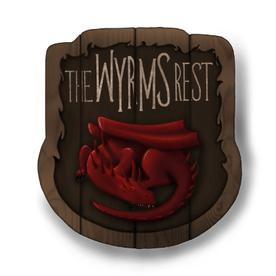

ESO Rollplay is brought to you by The Wyrm's Rest. The project was started to address two major inadequacies of the traditional out of game rolling solution, Discord bots:
- Players cannot express what their characters are good at with a bot.
- Rolls made by the bot have no connection to the actions they represent; it is difficult to review the rolls of a roleplaying event because a bot gives no context.
There were 2 main principles behind the design of the system:
- Keep things streamlined. This is particularly important during in-game sessions, where you want to keep the action moving. Players should just be able to show up and make their rolls without much fuss.
- The GM has the final say. Just like in tabletop gaming, the GM needs to be able to control what's happening. To that end, most rolls require the GM to determine their result.